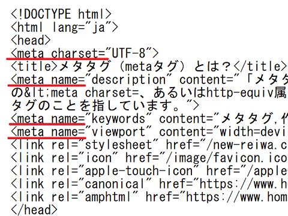
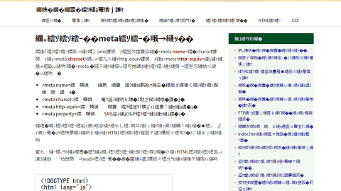

メタタグ（metaタグ）とは？SEO対策で重要となるポイント
メタ（meta）は「高次の」とか「上位の」といった意味になりますが、サイト上には表示されず、主に検索エンジンやクローラーロボット用の情報になります。そのため、このメタタグを記載しなくてもブラウザでのサイトの表示に変わりはありませんが、SEO対策で検索エンジンに最適化する際は重要なポイントになります。
メタタグの種類と役割
この「メタタグ」には、name属性の<meta name=やcharset属性の<meta charset=、あるいはhttp-equiv属性の<meta http-equiv=などの種類がありますが、これら<meta ～ではじまるHTMLタグのことを指しています。
- <meta name= → そのページの「説明分」や「キーワード」の指定
- <meta charset= → 使用する文字コードの指定
- <meta http-equiv= → ページを転送設定などの指定
- <meta property= → SNS用のOGPタグなどの指定
このメタタグを記載してもサイト上には表示されないため、記述内容を閲覧するにはHTMLソース上で確認する必要があります。
例えば、このページのメタタグは右クリックでHTMLソースを表示し、最初の<head>タグ内の箇所で確認することができます。

このうち、文字コードのcharset属性は単独で使用しますが、name属性やhttp-equiv属性を指定した際はcontent属性も合わせて指定します。
例えば、name属性で「description」を指定した際、contentで「説明文の内容」を記述します。あるいは、http-equiv属性で「refresh」を指定した際、contentで「ページ更新の秒数や転送先のURL」などを記載することになります。
このメタタグは<head>タグ内にて記載しますが、記載する順序に特に決まりはありません。
一般的には最初に文字コードの<meta charset=を指定し、次に<title>タグ、説明文の<meta name="description"やレスポンシブウェブデザインの<meta name="viewport"指定が続き、最後にOGPタグの<meta property=といった順序になります。
■<meta name=
特に、SEO対策をする上で記載しておいた方がよいのは、<meta name=にて指定するページ説明文の「description」やキーワードの「keywords」、そしてレスポンシブウェブデザインで使用する「viewport」です。
メタタグのなかでも、この<meta name=については種類が多く複雑です。実際の書き方についてはこちらのページをご参照ください。
→ <meta name=の説明文やキーワードの書き方
この<meta name=には、他にも制作者情報の「author」や作成ツール情報の「generator」などがありますが、最低限、「description」と「viewport」については指定しておくことをおすすめします。
当サイトで確認できたWebクローラーのうち、検索エンジン関連では15程度のクローラーがありましたが、他にも無数のクローラーロボットが存在します。検索エンジンによって確認する、しないの違いはありますが、最低限、「description」と「keywords」、「viewport」については指定しておくことをおすすめします。
■<meta charset=
メタタグを記載しなくてもサイトの表示に変わりはありませんが、文字コードを指定する<meta charset=については、こちらを指定しておかないと文字化けするので注意しましょう。

HTML5の場合、以下のように「UTF-8」で指定しておけば問題ありません。
<meta charset="UTF-8">
<body>以降の本文中で素晴らしいことが書かれていても、そもそも文字化けして表示されていなかったら意味がないため、必ず記載しておくようにしましょう。
■<meta http-equiv=
サイトやページを移転した際のリダイレクト設定は、通常は.htaccessにて指定しますが、無料レンタルなどの環境で設定できない場合、メタタグの0秒リダイレクトでも設定することができます。メタタグリダイレクトなどと呼ばれていますが、この場合は<meta http-equiv=にて「refresh」を使用する方法が一般的です。
<meta http-equiv="refresh" content="0; URL=http://転送先URL/">
content="0;の箇所はリダイレクトするまでの秒数になりますが、「0秒」で指定した際には、検索エンジン側では301リダイレクトと同じ扱いになります。
■<meta property=
また、SNSのOGPタグで使用する<meta property=などもありますが、こちらも指定しておくことをおすすめします。